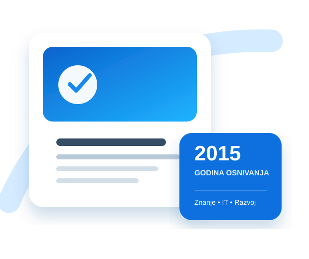

Ko smo, zašto postojimo i na koji način ostvarujemo ciljeve u oblasti obrazovanja, nauke i informacionih tehnologija.
Udruženje „Микиликс веб развој“ okuplja nastavnike, stručne saradnike, prosvetne radnike, stručnjake iz oblasti informacionih tehnologija i druge građane zainteresovane za obrazovanje, nauku i digitalni razvoj.
Delatnost ostvaruje na teritoriji Republike Srbije, sa sedištem u Kragujevcu.

Naša misija je unapređenje znanja, veština i kompetencija građana kroz edukacije, stručnu podršku, istraživanje, razvoj digitalnih rešenja i saradnju sa institucijama i zajednicom.
Težimo društvu u kome su kvalitetno obrazovanje, digitalna pismenost, inovacije i savremene tehnologije dostupni i primenjivi u svakodnevnom životu i radu.
Dodajte tačan datum i kratak opis osnivanja Udruženja — ovaj podatak nije bio naveden u dostavljenim dokumentima.
Prošireni su ciljevi i aktivnosti u oblastima obrazovanja, nauke, istraživanja, razvoja digitalnih platformi, publikacija i saradnje.
Prema članu 8. aktuelnog Statuta, organi Udruženja su Skupština i zastupnik Udruženja.
Čine je svi članovi. Donosi Statut, usvaja finansijske izveštaje, bira i opoziva zastupnika i odlučuje o ključnim pitanjima.
Predsedavajući skupštine
Predsedavao je skupštinskoj sednici na kojoj je usvojen važeći Statut i potpisao je dokument u tom svojstvu.
Podizanje kvaliteta obrazovanja, stručnog usavršavanja i savremenih metoda učenja.
Informatička i digitalna pismenost za decu, mlade, odrasle i organizacije.
Razvoj i odgovorna primena veb tehnologija, programiranja, platformi i aplikacija.
Podrška istraživačkim, razvojnim i interdisciplinarnim aktivnostima.
Programi i projekti koji doprinose obrazovanju, inovacijama i društvenom napretku.
Povezivanje sa ustanovama, institucijama, privredom i organizacijama u zemlji i inostranstvu.